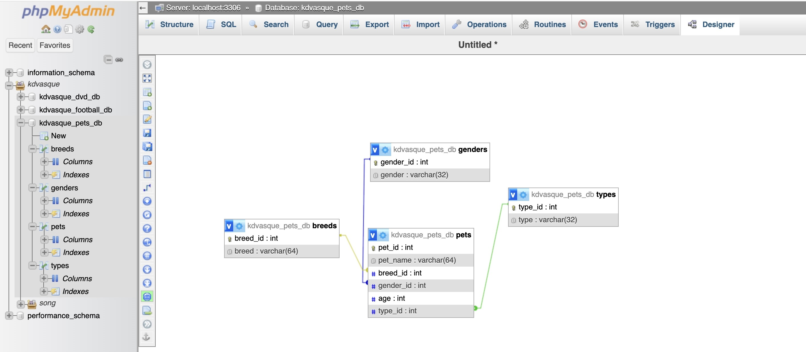

This website is a pet adoption site for dog and cat animal dog lovers out there. A user can "login" and see dogs and cats ready for adoption. If they have a pet they no longer want, they can add it to the website to display.
The user by the name of Susie Poodle logs in and is taken to the main site of Pawleeze, which is shop.php. In this page, you will find pre-existing pets from Pawleeze's database in a gallery. Each pet is represented by an image and a few details about the dog or cat. Only the pre-existing pets on shop.php have one button, which is for the user to begin adding to the cart (the DOM). User can also delete from cart when a remove button shows up next to pet added. If the user has a pet they would like to put up for adoption, they can fill out a form found on the left column, and this pet gets uploaded to the site's gallery of pets and database. These newly added pets have the option to be added to the cart like all other pets, removed from the site (and database). It also has an edit button. The user can navigate to the cart found in the navbar to check the pets in the cart, change the pet's name if desired before checkout, and can click "adopt now" to be taken back to the shop.php page where they have the option to logout or login again.
The source of the data essentially are the 20 pre-existing pets in the database plus those pets the user adds through a form.
